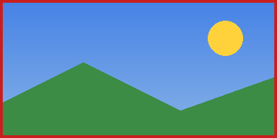

Formats: SVG (drawn at 2× its size, still sharp), AVIF, animated GIF and WebP
object-fit: fill, contain, cover, none, scale-down, cover + object-position: left top

fill
contain
cover
none
scale-down
left top
srcset and <picture> (window is 1024px wide)
sizes=300px → 320w
 50vw → 640w
50vw → 640w
picture → 640 (wide window)
Lazy loading: the image just below loads (near the window); one far down the page doesn't


 50vw → 640w
50vw → 640w